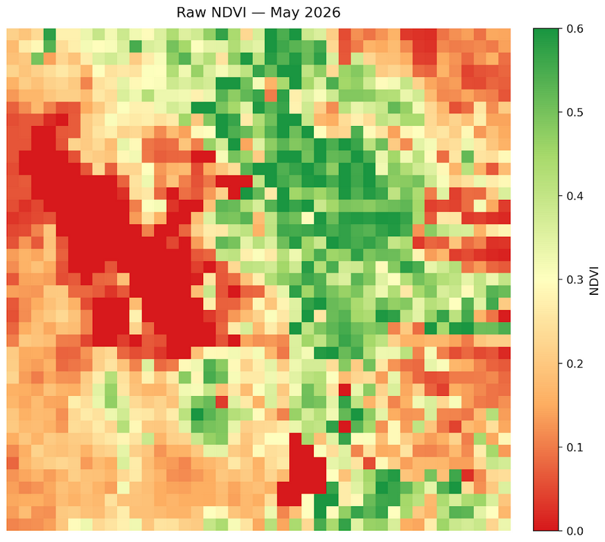
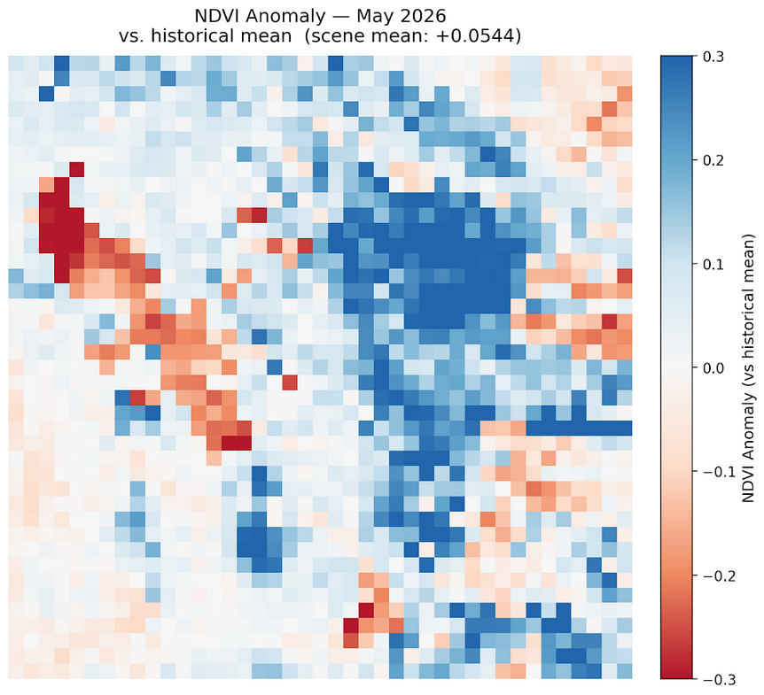
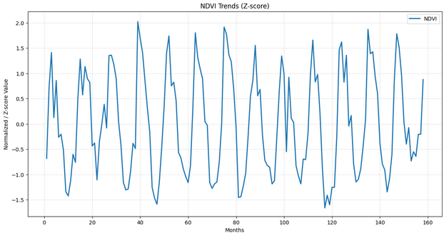
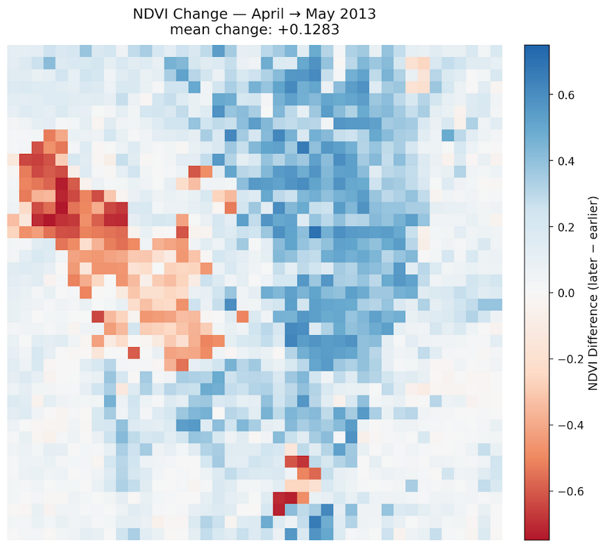
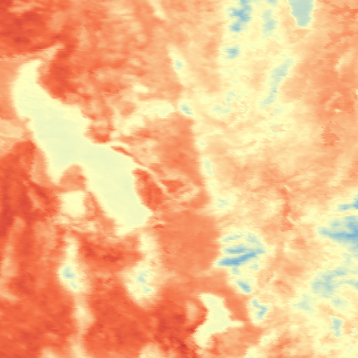

Monthly Report · Issue 06
May 2026
Vegetation dynamics across the Wasatch Front
By Scott Vars
Vegetation dynamics across the Wasatch Front
By Scott Vars
Raw vegetation index across the Wasatch Front for May 2026. Much of the Wasatch Front lay within the 0.2-0.6 range, with large swathes of green throughout the entirety of the Wasatch Front and even a little in the Salt Lake Valley. The lake values (Great Salt Lake and Utah Lake) are both at 0, as normal. This is representing a massive green-up since April, and we are starting to see pretty healthy vegetation as we go into this summer.

NDVI was significantly higher for May 2026, with an average increase in NDVI of about +0.054. This is an increase from the historical mean, showing very significant growth in vegetation, especially in the Wasatch Front areas, although we do also see meaningful growth in the Salt Lake Valley and areas just surrounding Utah Lake. There is little to no contrast (except for the lakes, which is expected), and it shows a uniform increase across the entire Front for vegetation. This is showing very promising signs of vegetation. It is late enough into the growth season that we can see the entirety of the green vegetative signal without much snow interference, and since this map is z-scored, we have effectively stripped it of any green-up signal. This allows us to evaluate the map purely in terms of how healthy the vegetation is, and we see quite a bit of vegetative health in this map.
Overall a uniform increase in vegetation compared to the historical mean, which shows promising healthy vegetation as we go into the summer.

Looking at the updated NDVI Trends graph, we can see that May 2026 has shot up in vegetation, as is expected from this time of the year. The green-up season has mostly ended, although we should expect to see increases in vegetation in this context at least until July, in which it will likely begin to fall again. Overall though, this is showing a typical May behaviour.

NDVI increased overall from April to May, with a mean change of +0.1283 across the Wasatch Front region. This is a very substantial gain, which is expected from this time of year. The most substantial gains occurred in the central parts of the Wasatch Front, especially the mountainous areas, although there was some increase in the Salt Lake Valley and the areas surrounding Utah Lake. This likely reflects a large spring green-up across the entire Wasatch Front, as besides the lake pixels, virtually the entire Front increased in vegetation. There isn't much to draw from this map alone as it is hard to separate the green-up from the actual vegetation health, although this massive amount of change is what you would expect from this time of the year. Overall, everything seems nominal.

The sharp increase over the actual lake area of the Great Salt Lake and Bear Lake and the small increase upon the Utah Lake area are likely due to remote sensing artifacts, so please disregard. They are likely not real readings and when looking at the raw NDVI maps, they did not change at all.
Compared to May 2025, we don't really see any meaningful change in vegetation. Overall, the scene seems pretty mixed, with a slight overall decrease in urban environments and slight overall increase in most places, besides a couple patches of decrease. This shows a mostly stagnant scene of change from the past year, with a mean decrease of only .0006, which is marginal. Combined with the increase in the anomaly measurement, we can conclude that both May 2025 and May 2026 had relatively the same effect, with a large amount of vegetation increase during this month, showing a continued trend from the last year.

This is our last map for today, which is the Land Surface Temperature map. This map is especially important because while NDVI shows us how much of the land is covered by vegetation, LST can show us how much of the vegetation is stressed. Overly hot vegetation can show us drought stress, even with a high NDVI, which is why it is important to analyze both at once. Overall from this map, the LST seems to be quite normal. The mountainous areas of the Front show relatively normal values, and the increased amount of red in the West part of the Wasatch Front is normal as we see more desert and urban areas in that region. Overall, there is nothing to really worry about here, everything seems to be temperate temperatures, which contributes to the fact that once again we are seeing healthy vegetation in May 2026. Drought stress does not seem to be prominent, and although these values seem to be on the higher side for temperate, it is nothing to worry about and expected for this region.

The May 2026 Wasatch Watch report tells a story of a strong and healthy green-up. Month-over-month, NDVI increased by a mean of +0.1283 from April to May, a very substantial gain that reflects the late spring green-up sweeping across virtually the entire Wasatch Front. The NDVI trends graph confirms this is typical May behavior, with the green-up season mostly concluded and peak vegetation expected to hold through July before beginning its seasonal decline.
The seasonal anomaly map reinforces the positive picture: May 2026 sits about +0.054 above the historical May mean, with a uniform increase across the entire Front. Because the anomaly map is z-scored, the green-up signal is effectively stripped away, meaning this increase reflects genuinely healthy vegetation rather than simply an early or late season. Year-over-year, May 2026 is essentially flat compared to May 2025, with a mean change of only -0.0006, indicating that both years produced a similarly strong vegetation response during this month and that the healthy conditions seen in May 2025 have continued into 2026. The Land Surface Temperature map adds further confidence: temperatures across the Front appear normal and temperate, with no meaningful signs of drought stress, supporting the conclusion that the vegetation observed this month is as healthy as the NDVI values suggest.
NDVI values derived from Landsat 8 TOA median composites at 5.5km resolution. Difference maps computed from raw NDVI prior to any normalization. Historical comparisons use the 2013–2026 Landsat archive.
Landsat 8/9 imagery courtesy of the U.S. Geological Survey via Google Earth Engine.
NOAA National Centers for Environmental Information, Monthly Climate Reports and drought summaries.